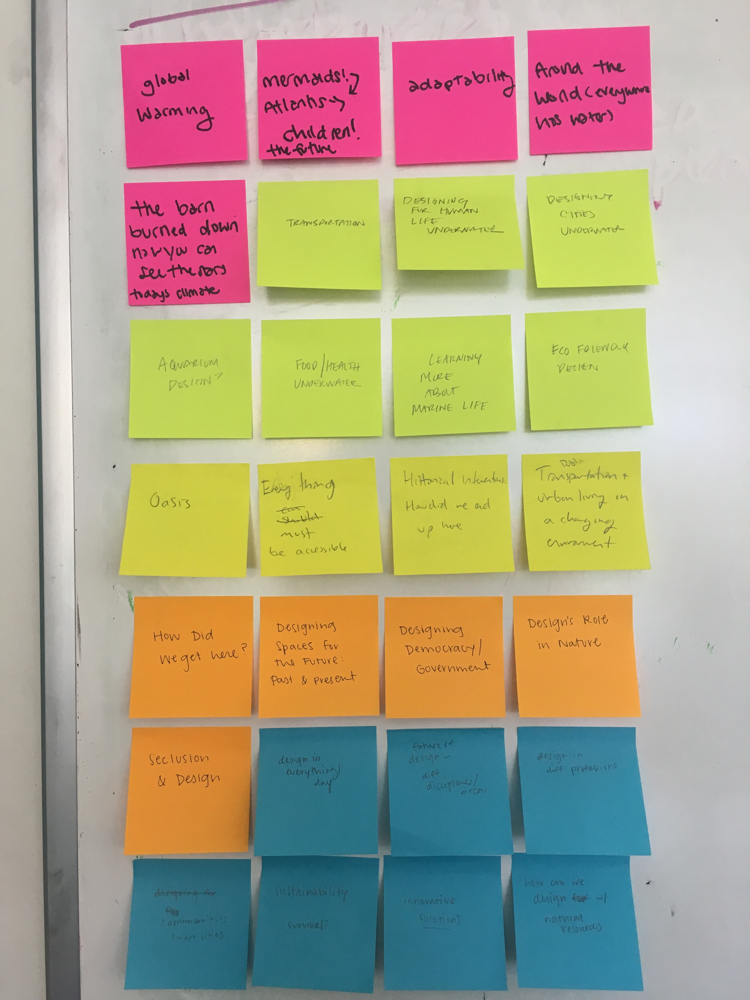
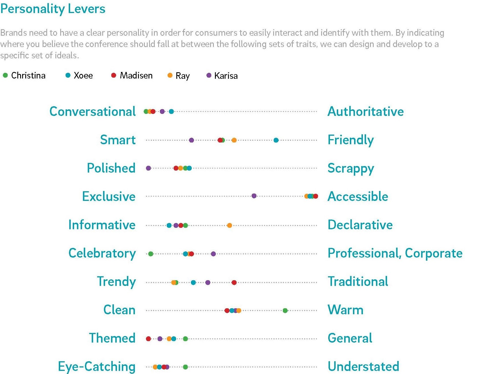
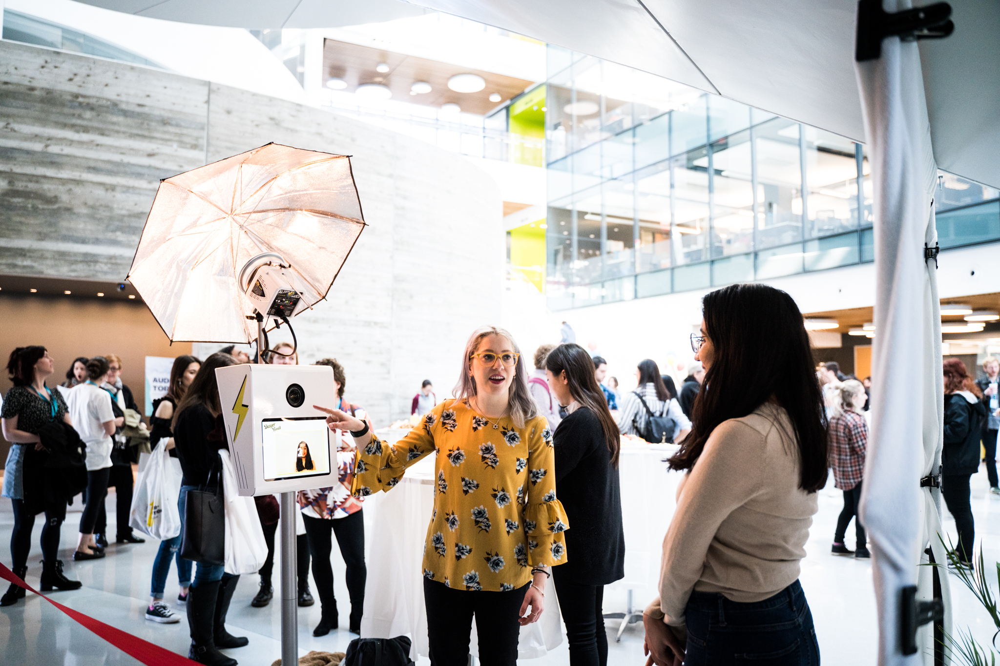
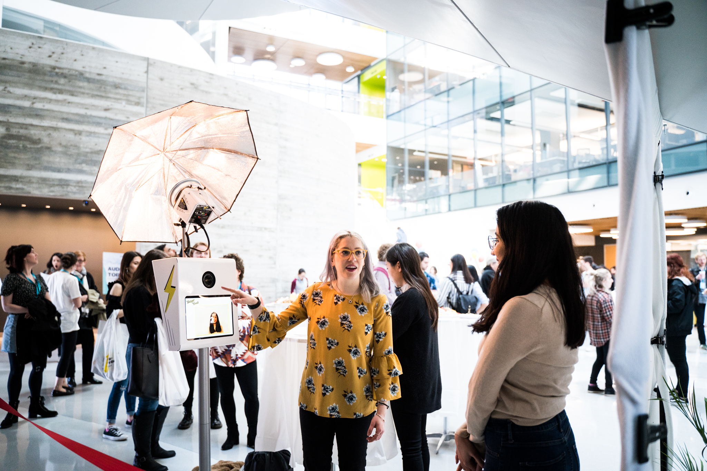

Interventions: Narrative
SCOUT DESIGN STUDIO / FALL 2018
Logistics Coordinator (Conference Team)
How might we create a conference that attendees think about, talk about, and return to year after year?
Interventions: Narrative is the second-annual design conference of Scout, Northeastern University's entirely student-led design studio. As Logistics Coordinator on Scout's first conference team, I was in charge of all immediate tasks for the conference, including setting team priorities in the months leading up to the big day. I defined the 2019 Narrative brand through writing copy and sourcing over half of the speakers.
{kind=link}
Background
On April 7th 2018, I attended Scout's first ever conference, Interventions, and was absolutely blown away by the scale and professionalism of the event put together by my fellow students. Interventions was a gathering of students and designers in the local Boston community, with speakers from Airbnb, Adobe, Lyft, Monotype, and more. I got fresh screen-printed posters, met Debbie Millman of Design Matters, and made new graduate friends from MassArt nearby. The experience was inspiring-- it showed me the power of the design community as well as the Northeastern student community.
Challenges
The following semester, I joined Scout's first team dedicated to conference. Our team consisted of five members: a director, two designers, a developer, and myself. We had the unique challenges of setting precedence as the first team and building upon the first conference.
Some of our How Might We questions:
-
How might we keep Interventions brand while adapting for the current year's theme?
-
How might we establish a lasting overall theme?
-
How might we continue to generate theme ideas for future Interventions?
Brand and Theme Exploration
{kind=link}

{kind=link}
Instead of just taking 2018 materials and running with them, we wanted to open our eyes to new possibilities for Interventions. We conducted brainstorming exercises to determine the direction we wanted to take.
Of course, we were still building upon the work of the first conference, and so we revisited the meaning of Interventions. We decided to keep the name, and continue to explore design interventions.

We started with general ideas for what 2019's theme would be. As we brainstormed, I realized that the theme could not be too general, to allow for more possibilities in future years. Our annual conferences should reflect the current year in design. Considering recent events like AOC's campaign, we resonated with the idea of designers taking control of the narrative and design's power in activism.
Brand Elements
{kind=link}
{kind=link}
Taking "narrative" further, we developed a visual brand around collage elements, showing how we take existing materials and make it our own.
I defined a tagline, a two-sentence abstract, and a full abstract for our new brand, Interventions: Narrative. These became the fundamental copy for our website, press kit, and elevator pitches that we shared with the entire Scout studio.
Abstract:
Interventions: Narrative is a celebration of designers as influential storytellers and activists across disciplines and industries. For one day, Interventions: Narrative brings together designers, engineers, and entrepreneurs to discuss the roles that creatives play in society at large, and explore the responsibilities that come with putting work into the world in an age of mass media skepticism and change. Through a series of lectures and panels, our guests will share the ways that they create, own, and maintain narratives through design.
Website copy:
{kind=link}
Speaker Sourcing
Our guests onstage had to be able to speak to the narrative theme. I created a spreadsheet of all possible speakers, with suggestions from the team, the studio, and other students around Northeastern. I also designed a speaker and topic interest survey to email to the Northeastern University community. I balanced feedback from the team feedback from the community, and my own decisions, to inform our top choices for speakers. As I engaged with each speaker, I identified key topics that related to the narrative theme and their personal work.
{kind=link}
From assigning a point system, I determined that the top choice topics from 51 responses were Journalism, Design Ethics, and Data Visualization. Open-ended questions later in the survey also yielded valuable feedback from the student community, including the idea that narratives can be big or small within society.
I drafted email templates and meeting points that were personalized for each speaker. I also strategized reachout and created an action plan, spanning from September to December. I installed Gmail Boomerang in our Scout Conference email and automated follow-ups if a speaker did not reply to the initial email.
{kind=link}
I quickly defined a basic reachout process.
Our goal was to reach ½ the number of speakers from last year (15) by mid-December, which meant at least 8 speakers. I was able to meet this goal, and personally confirmed our speakers Amanda, Nick, Matt, Martha, Sofie, and Shaun, Maria, and Scott from Tandem NYC!
{kind=link}
{kind=link}
{kind=link}

Towards December, I had to hand off communication to the Spring semester team.
Scheduling
Scheduling also informed speakers and topics. I worked with Christina to build a day-of schedule, including strategically-placed coffee breaks. As we were both avid event-goers, we used personal experiences at other conferences in addition to the first Scout conference to determine length of keynotes, talks, panels, lunch, and breaks. I created a WIP schedule as I sourced speakers.
Attendee Experience
I approached tackling logistical problems I had observed as an attendee of the first Scout conference, as well as the challenges of adding things I wanted. I reimagined our venue to see if I could alleviate crowding in the atrium (a major problem), design a better flow for the lunch line, and more.
{kind=link}
{kind=link}
The schedule included time for attendees to explore stations in the atrium. I brainstormed ideas for new experiences such as a design gallery inside the classrooms along the atrium.
 

{kind=link}
Christina and I also considered scheduling in workshops and lunch sessions with speakers, which I had enjoyed at Harvard Graduate School of Design's InfluencexDesign conference earlier in the year. Unfortunately, it did not work out logistically in our schedule, and we decided to keep the idea for future conferences.
Outcomes
This project was our baby, and I was proud of all that my team accomplished. We met our goals and established the foundation for the Spring semester team to continue with up to the big day. As the first conference team, we also analyzed what worked and did not work, and if we individually met our own learning goals.
I learned how to develop a brand for a live event and create a months-long strategy. Through all of my work, I also learned the invaluable skill of how to balance making my own decisions and gathering feedback. I'd always like more feedback to reflect the wants of the community and avoid my personal biases, but in order to get things started, I realize that at some point I will have to go ahead and do what I feel is right. For example, this came up in speaker sourcing-- even after community feedback, there were too many cool people to reach out to! I eventually had to decide our top choices and get started.
{kind=link}
{kind=link}
{kind=link}